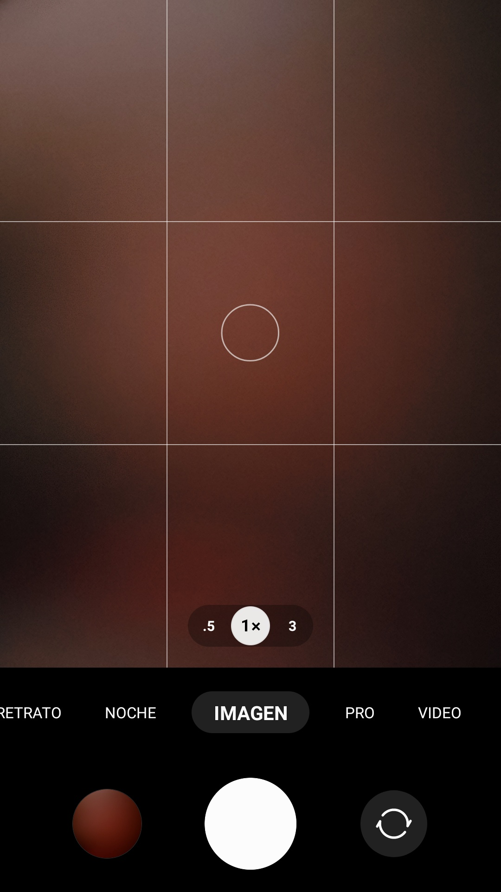
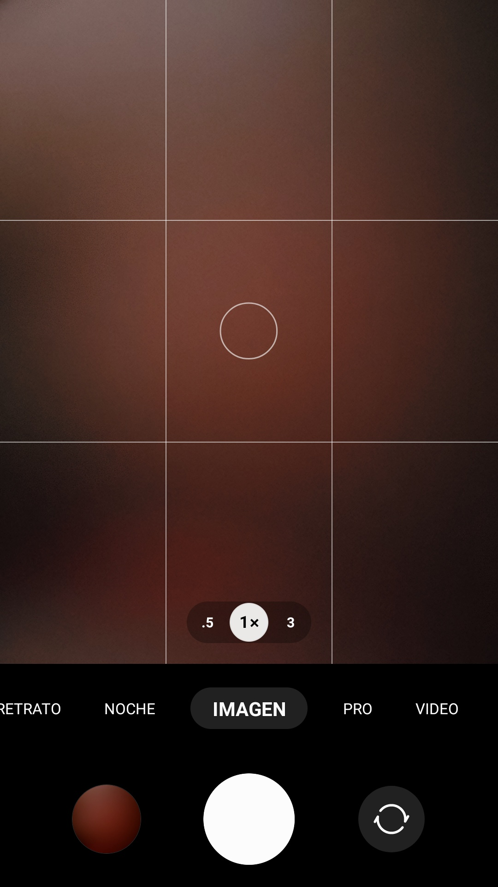

Cualquiera puede
En la era de los smartphones, cualquier persona puede ser un fotógrafo. Ya sea que quieras documentar momentos especiales, capturar la belleza de la naturaleza o simplemente compartir tus momentos en las redes sociales, aprender a tomar una buena fotografía con tu celular es fundamental. A continuación, te voy a mostrar lo que necesitás saber para empezar.

Imagen de wayhomestudio en Freepik
Índice
Lo que hay que saber para empezar
Antes de empezar a tomar fotografías con tu celular, es importante conocer algunos conceptos básicos de fotografía. La composición es uno de los aspectos más importantes. La regla de los tercios es una técnica utilizada para crear una composición equilibrada y armoniosa.

Básicamente, se divide la imagen en tres partes iguales, tanto horizontal como verticalmente. Luego, se colocan los elementos importantes de la imagen en las intersecciones de estas líneas. Esta técnica ayuda a crear una imagen más interesante y atractiva.
Otro aspecto importante es la iluminación. La luz es el elemento más importante en la fotografía. Es esencial aprender a utilizarla correctamente para crear la atmósfera que deseas.


Por ejemplo, la luz de la tarde es más cálida y suave, mientras que la luz del mediodía es más dura y directa, y cuando hay nubes es neutral. Aprender a utilizar la luz a tu favor es crucial para tomar una buena fotografía.
Resumen de Iluminación
| Mediodía | Atardecer | Nublado |
|---|---|---|
| Luz directa | Luz cálida | Luz neutral |
| Mucha Luz | Equilibrada | Poca Luz |
|---|---|---|
| Zonas blancas | Visibilidad perfecta | Zonas negras |
Desarrollo técnico
Ahora que ya conoces algunos conceptos básicos de fotografía, es hora de empezar a practicar.
 

Una vez limpia la pantalla y la cámara... Seguimos la regla de los tercios, encuadrando lo que deseas capturar.
Prueba distintas posiciones, horarios, momentos, para obtener varias perspectivas de iluminación. Para así elegir la que se adecúe mejor al resultado que deseas.
Descripción de Imagen
Ideas
Acá te dejo unas ideas para explorar lo aprendido, pero con un enfoque... diferente.
Retrato. La idea de los retratos es que haya un protagonista. Este, debe destacar. Mi tip es que el protagonista esté mirando hacia la fuente de luz.

Detalle. Mientras haya 'detalle' cualquiera puede ser protagonista. Tip: el efecto 'quemado', no siempre es malo. En este caso, acompaña aportando frescura.
Espejo. En los tercios centrales está el duplicado, y en los superiores e inferiores hay algo diferente. En este caso, en el superior está el cielo despejado, y en el inferior hay vegetación.